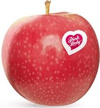
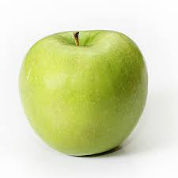
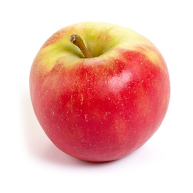
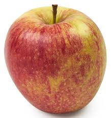
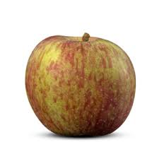

Hier een tabel met verschillende soorten appels:
| Naam: | Kenmerken: | Afbeelding: |
| Pink Lady |
Erg populair, en niet zonder reden. Deze knapperige, roze appel is geliefd door zijn zoete smaak en stevige structuur. |
 |
| Granny Smith |
Een frisgroene appel met een zure smaak. Perfect voor appeltaart en andere baksels. |
 |
| Elstar |
Een sappige appel met een zoetzure smaak. Zeer populair in Nederland. |
 |
| Jonagold |
Grote appel met een zoete en lichtzure smaak. Geschikt om vers te eten én om te bakken. |
 |
| Fuji |
Een zeer zoete en knapperige appel. Blijft lang vers en is ideaal als tussendoortje. |
 |